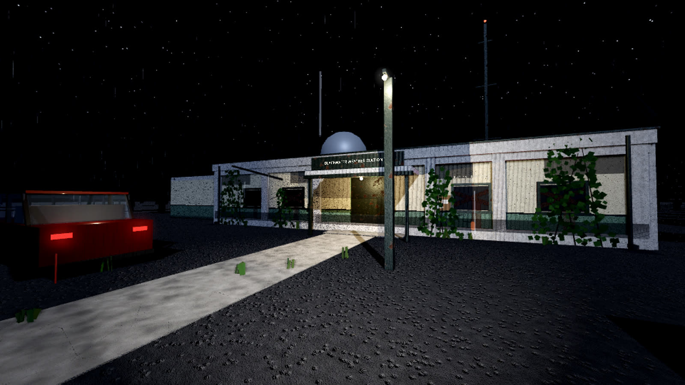
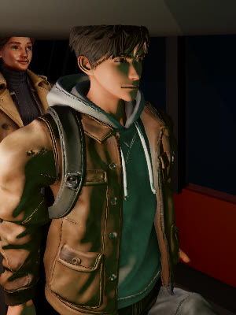

<meta charset="utf-8">
<title>Deep Static Games</title>
<meta name="claude:viewport-fit-sides" content="cover">
<meta name="description" content="Deep Static Games, an indie horror studio. Now making Deepwell, a 1-4 player co-op horror game.">
<link rel="preconnect" href="https://fonts.googleapis.com">
<link rel="preconnect" href="https://fonts.gstatic.com" crossorigin>
<link rel="stylesheet" href="https://fonts.googleapis.com/css2?family=Oswald:wght@400;600;700&family=IBM+Plex+Sans:wght@400;500&family=IBM+Plex+Mono:wght@400;500&display=swap">
<style>
/* Layout: one dark broadcast "feed": a monitor-framed intro, then the game's case file
   (station photo, missing list, the four who go in, footage), read top to bottom. */
:root {
  --void: #0b0a0a;        /* page */
  --panel: #141212;       /* raised surfaces */
  --rule: #2b2626;        /* lines */
  --bone: #e9e4da;        /* main text, like the logo letters */
  --ash: #a39d94;         /* quiet text */
  --signal: #b0141c;      /* the red signal line */
  --signal-hot: #e3363e;  /* red on hover / small red text */
  --display: "Oswald", "Arial Narrow", Impact, sans-serif;
  --body: "IBM Plex Sans", "Segoe UI", Roboto, Arial, sans-serif;
  --mono: "IBM Plex Mono", "Consolas", "Courier New", monospace;
  color-scheme: dark;
}
* { box-sizing: border-box; }
html { scroll-behavior: smooth; }
body {
  background: var(--void); color: var(--bone);
  font: 400 17px/1.65 var(--body);
  padding-left: max(16px, env(safe-area-inset-left, 0px));
  padding-right: max(16px, env(safe-area-inset-right, 0px));
}
/* faint scan lines over everything */
body::after {
  content: ""; position: fixed; inset: 0; pointer-events: none; z-index: 50;
  background: repeating-linear-gradient(to bottom, rgba(0,0,0,0) 0 2px, rgba(0,0,0,0.16) 2px 4px);
}
body::before {
  content: ""; position: fixed; inset: 0 0 auto; height: env(safe-area-inset-top, 0px);
  z-index: 10; background: var(--void);
}
a { color: inherit; }
a:focus-visible, button:focus-visible { outline: 2px solid var(--signal-hot); outline-offset: 3px; }
.wrap { max-width: 1120px; margin: 0 auto; }
img { max-width: 100%; display: block; }

/* ---------- top bar ---------- */
.bar {
  position: sticky; top: env(safe-area-inset-top, 0px); z-index: 20;
  background: color-mix(in srgb, var(--void) 88%, transparent);
  backdrop-filter: blur(6px);
  border-bottom: 1px solid var(--rule);
  margin-left: calc(-1 * max(16px, env(safe-area-inset-left, 0px)));
  margin-right: calc(-1 * max(16px, env(safe-area-inset-right, 0px)));
  padding-left: max(16px, env(safe-area-inset-left, 0px));
  padding-right: max(16px, env(safe-area-inset-right, 0px));
}
.bar .wrap { display: flex; align-items: center; justify-content: space-between; gap: 16px; padding-block: 12px; }
.brand { display: flex; align-items: center; gap: 12px; text-decoration: none; }
.brand canvas { width: 38px; height: 38px; }
.brand span { font: 700 20px/1 var(--display); letter-spacing: 0.08em; }
.brand small { color: var(--signal-hot); font-weight: 400; letter-spacing: 0.3em; margin-left: 6px; }
nav { display: flex; gap: 22px; flex-wrap: wrap; }
nav a { font: 500 12px/1 var(--mono); letter-spacing: 0.16em; text-transform: uppercase; color: var(--ash); text-decoration: none; padding-block: 6px; }
nav a:hover { color: var(--bone); }

/* ---------- intro monitor ---------- */
.intro { padding-block: 40px 28px; }
.monitor {
  position: relative; border: 1px solid var(--rule); background: #000;
  aspect-ratio: 16 / 9; max-width: 100%; overflow: hidden;
}
.monitor video { width: 100%; height: 100%; object-fit: cover; display: block; }
.monitor .rec {
  position: absolute; top: 14px; left: 16px; font: 500 12px/1 var(--mono); letter-spacing: 0.14em;
  color: var(--bone); display: flex; align-items: center; gap: 8px; text-shadow: 0 1px 2px #000;
}
.monitor .rec i { width: 9px; height: 9px; border-radius: 50%; background: var(--signal-hot); animation: blink 1.4s steps(2) infinite; }
@keyframes blink { 50% { opacity: 0.15; } }
.intro-row { display: flex; justify-content: space-between; align-items: center; gap: 16px; flex-wrap: wrap; margin-top: 14px; }
.intro-row p { margin: 0; font: 400 13px/1.5 var(--mono); color: var(--ash); letter-spacing: 0.04em; }
.btn {
  font: 600 14px/1 var(--display); letter-spacing: 0.18em; text-transform: uppercase;
  color: var(--bone); background: transparent; border: 1px solid var(--signal);
  padding: 13px 20px; cursor: pointer; text-decoration: none; display: inline-flex; gap: 10px; align-items: center;
}
.btn:hover { background: var(--signal); }
.btn.solid { background: var(--signal); }
.btn.solid:hover { background: var(--signal-hot); border-color: var(--signal-hot); }

/* ---------- section heads ---------- */
section { padding-block: 72px; border-top: 1px solid var(--rule); }
.eyebrow { font: 500 12px/1 var(--mono); letter-spacing: 0.22em; text-transform: uppercase; color: var(--signal-hot); margin: 0 0 14px; }
h1, h2, h3 { font-family: var(--display); font-weight: 700; text-transform: uppercase; text-wrap: balance; margin: 0; }
h2 { font-size: clamp(34px, 6vw, 64px); line-height: 1; letter-spacing: 0.02em; }
h3 { font-size: 26px; line-height: 1.1; letter-spacing: 0.04em; }
.lede { font-size: 19px; color: var(--bone); max-width: 62ch; margin: 22px 0 0; }
p { max-width: 65ch; }

/* ---------- studio ---------- */
.studio { display: grid; grid-template-columns: 1.1fr 1fr; gap: 48px; align-items: start; }
.studio > * { min-width: 0; }
.studio p { color: var(--ash); margin: 18px 0 0; }
.studio p strong { color: var(--bone); font-weight: 500; }
.readout { border: 1px solid var(--rule); background: var(--panel); font: 400 14px/1.4 var(--mono); }
.readout div { display: flex; justify-content: space-between; gap: 16px; padding: 14px 18px; border-bottom: 1px solid var(--rule); }
.readout div:last-child { border-bottom: 0; }
.readout dt { color: var(--ash); letter-spacing: 0.08em; text-transform: uppercase; font-size: 12px; }
.readout dd { margin: 0; text-align: right; }
.readout canvas { width: 100%; height: 64px; display: block; border-top: 1px solid var(--rule); }

/* ---------- deepwell ---------- */
.game-head { display: grid; grid-template-columns: 1fr; gap: 20px; }
.game-head > * { min-width: 0; }
.game-title { font-size: clamp(64px, 14vw, 168px); line-height: 0.86; letter-spacing: 0.02em; }
.tags { display: flex; flex-wrap: wrap; gap: 8px; }
.tag { font: 500 12px/1 var(--mono); letter-spacing: 0.1em; text-transform: uppercase; border: 1px solid var(--rule); padding: 8px 10px; color: var(--ash); }
.station { margin: 36px 0 0; position: relative; border: 1px solid var(--rule); }
.station img { width: 100%; aspect-ratio: 16 / 9; object-fit: cover; }
.station figcaption {
  position: absolute; left: 0; right: 0; bottom: 0; padding: 40px 20px 16px;
  background: linear-gradient(to top, rgba(0,0,0,0.92), rgba(0,0,0,0));
  font: 400 13px/1.4 var(--mono); color: var(--bone); letter-spacing: 0.06em;
}
.story { display: grid; grid-template-columns: 1fr 1fr; gap: 48px; margin-top: 48px; }
.story > * { min-width: 0; }
.story p { color: var(--ash); margin: 0 0 16px; }
.story p:first-child { color: var(--bone); font-size: 19px; }

/* missing persons list: the case file */
.casefile { border: 1px solid var(--rule); background: var(--panel); }
.casefile header {
  display: flex; justify-content: space-between; gap: 12px; padding: 14px 18px; border-bottom: 1px solid var(--rule);
  font: 500 12px/1.3 var(--mono); letter-spacing: 0.16em; text-transform: uppercase;
}
.casefile header b { color: var(--signal-hot); font-weight: 500; }
.casefile ol { list-style: none; margin: 0; padding: 0; counter-reset: m; }
.casefile li {
  counter-increment: m; display: grid; grid-template-columns: 34px 1fr auto; gap: 12px; align-items: baseline;
  padding: 12px 18px; border-bottom: 1px dashed var(--rule); font: 400 15px/1.4 var(--mono);
}
.casefile li:last-child { border-bottom: 0; }
.casefile li::before { content: counter(m, decimal-leading-zero); color: var(--ash); font-size: 12px; }
.casefile li span { min-width: 0; }
.casefile li em { font-style: normal; color: var(--ash); font-size: 12px; display: block; }
.casefile li.unknown span { color: var(--ash); }
.casefile li.latest { background: rgba(176, 20, 28, 0.12); }
.casefile .status { font-size: 11px; letter-spacing: 0.14em; color: var(--signal-hot); }

/* ---------- team ---------- */
.team { display: grid; grid-template-columns: repeat(4, 1fr); gap: 16px; margin-top: 40px; }
.card { border: 1px solid var(--rule); background: var(--panel); display: flex; flex-direction: column; min-width: 0; }
.card .photo { aspect-ratio: 3 / 4; background: #000; position: relative; overflow: hidden; }
.card .photo img, .card .photo canvas { width: 100%; height: 100%; object-fit: cover; display: block; }
.card .photo .nofile {
  position: absolute; inset: auto 0 0 0; padding: 10px 12px; font: 500 11px/1.3 var(--mono);
  letter-spacing: 0.14em; text-transform: uppercase; background: rgba(0,0,0,0.75); color: var(--bone);
}
.card .body { padding: 18px; display: flex; flex-direction: column; gap: 10px; flex: 1; }
.card .role { font: 500 11px/1.3 var(--mono); letter-spacing: 0.16em; text-transform: uppercase; color: var(--signal-hot); }
.card p { margin: 0; font-size: 15px; color: var(--ash); }
.card .skill { font: 400 13px/1.5 var(--mono); color: var(--bone); border-top: 1px solid var(--rule); padding-top: 10px; }
.card .skill b { font-weight: 500; color: var(--signal-hot); letter-spacing: 0.08em; }
.card blockquote { margin: auto 0 0; padding-top: 10px; font: 400 italic 15px/1.45 var(--body); color: var(--bone); }

/* ---------- footage ---------- */
.footage { display: grid; grid-template-columns: repeat(6, 1fr); gap: 12px; margin-top: 40px; }
.footage figure { margin: 0; border: 1px solid var(--rule); background: #000; min-width: 0; }
.footage figure img { width: 100%; aspect-ratio: 16 / 9; object-fit: cover; }
.footage figcaption { font: 400 12px/1.4 var(--mono); color: var(--ash); padding: 10px 12px; letter-spacing: 0.04em; }
.footage figcaption b { color: var(--bone); font-weight: 500; }
.footage .big { grid-column: span 4; }
.footage .tall { grid-column: span 2; }
.footage .half { grid-column: span 3; }

/* ---------- how it plays ---------- */
.plays { display: grid; grid-template-columns: repeat(3, 1fr); gap: 0; margin-top: 40px; border: 1px solid var(--rule); }
.plays div { padding: 24px; border-right: 1px solid var(--rule); border-bottom: 1px solid var(--rule); min-width: 0; }
.plays div:nth-child(3n) { border-right: 0; }
.plays div:nth-last-child(-n+3) { border-bottom: 0; }
.plays h3 { font-size: 21px; margin-bottom: 8px; }
.plays p { margin: 0; color: var(--ash); font-size: 15px; }

/* ---------- status ---------- */
.status-box { display: grid; grid-template-columns: 1fr auto; gap: 32px; align-items: center; }
.status-box > * { min-width: 0; }
.meter { margin-top: 26px; font: 400 13px/1.4 var(--mono); color: var(--ash); max-width: 560px; }
.meter .track { height: 10px; border: 1px solid var(--rule); margin: 8px 0; position: relative; background: var(--panel); }
.meter .fill { position: absolute; inset: 0 auto 0 0; width: 70%; background: repeating-linear-gradient(90deg, var(--signal) 0 10px, transparent 10px 12px); }
.meter .row { display: flex; justify-content: space-between; gap: 12px; }

footer { border-top: 1px solid var(--rule); padding-block: 32px 48px; font: 400 12px/1.6 var(--mono); color: var(--ash); letter-spacing: 0.06em; }
footer .wrap { display: flex; justify-content: space-between; gap: 16px; flex-wrap: wrap; }

/* ---------- smaller screens ---------- */
@media (max-width: 960px) {
  .team { grid-template-columns: repeat(2, 1fr); }
  .plays { grid-template-columns: 1fr 1fr; }
  .plays div { border-right: 1px solid var(--rule) !important; border-bottom: 1px solid var(--rule) !important; }
  .plays div:nth-child(2n) { border-right: 0 !important; }
}
@media (max-width: 760px) {
  .studio, .story, .game-head, .status-box { grid-template-columns: 1fr; }
  .footage { grid-template-columns: 1fr; }
  .footage .big, .footage .tall, .footage .half { grid-column: auto; }
  nav { gap: 14px; }
  nav a:nth-child(n+3) { display: none; }
  section { padding-block: 52px; }
}
@media (max-width: 520px) {
  .team, .plays { grid-template-columns: 1fr; }
  .plays div { border-right: 0 !important; }
  .brand small { display: none; }
}
@media (prefers-reduced-motion: reduce) {
  html { scroll-behavior: auto; }
  .monitor .rec i { animation: none; }
}
</style>

<header class="bar">
  <div class="wrap">
    <a class="brand" href="#top" aria-label="Deep Static Games, back to top">
      <canvas id="mark" width="76" height="76" aria-hidden="true"></canvas>
      <span>DEEP STATIC<small>GAMES</small></span>
    </a>
    <nav aria-label="Sections">
      <a href="#deepwell">Deepwell</a>
      <a href="#team">The Four</a>
      <a href="#footage">Footage</a>
      <a href="#studio">Studio</a>
    </nav>
  </div>
</header>

<main class="wrap" id="top">

  <div class="intro">
    <div class="monitor">
      <video id="intro" src="media/intro.mp4" poster="media/poster.jpg" muted autoplay loop playsinline preload="auto"
             aria-label="Deep Static Games logo intro: TV static, a red heartbeat signal, then the studio name."></video>
      <div class="rec"><i></i>CH 07 · LIVE</div>
    </div>
    <div class="intro-row">
      <p>Deep Static Games makes horror you play with friends.</p>
      <button class="btn" id="sound" type="button" aria-pressed="false">▶ Play with sound</button>
    </div>
  </div>

  <section id="deepwell">
    <div class="game-head">
      <div>
        <p class="eyebrow">Our first game · in development</p>
        <h1 class="game-title">Deepwell</h1>
      </div>
      <div class="tags">
        <span class="tag">1–4 players co-op</span>
        <span class="tag">First person</span>
        <span class="tag">Horror</span>
        <span class="tag">Puzzles</span>
        <span class="tag">PC</span>
      </div>
    </div>

    <p class="lede">Eight people have gone missing near an old weather station. Four people go in after them.</p>

    <figure class="station">
      
      <figcaption>BLACKWATER WEATHER STATION 7 · OCT 2015 · 23:41</figcaption>
    </figure>

    <div class="story">
      <div>
        <p>Under the weather station is a secret Cold War lab that studied "soldier enhancement." In 1999 the experiments went wrong. The lower floors were sealed with people still inside, and the official story was a gas leak.</p>
        <p>Eli Reyes lost both his parents that night. Now it's 2015. His two best friends went in to find out the truth and never came back. Two weeks ago his twin brother Mateo followed them.</p>
        <p>Nothing inside was ever updated: reel-to-reel tapes, bulky computers, bunker doors. Your phones get no signal down there. All you have is walkie-talkies, flashlights, and each other.</p>
      </div>

      <div class="casefile" aria-label="Missing persons list">
        <header><span>Missing near Station 7</span><b>8 people</b></header>
        <ol>
          <li class="unknown"><span>Name not released<em>Missing since Aug 2015</em></span><span class="status">Missing</span></li>
          <li class="unknown"><span>Name not released<em>Missing since Aug 2015</em></span><span class="status">Missing</span></li>
          <li class="unknown"><span>Name not released<em>Missing since Aug 2015</em></span><span class="status">Missing</span></li>
          <li class="unknown"><span>Name not released<em>Missing since Sep 2015</em></span><span class="status">Missing</span></li>
          <li class="unknown"><span>Name not released<em>Missing since Sep 2015</em></span><span class="status">Missing</span></li>
          <li><span>Marcus Bell<em>Eli's best friend</em></span><span class="status">Missing</span></li>
          <li><span>Jenna Park<em>Eli's best friend</em></span><span class="status">Missing</span></li>
          <li class="latest"><span>Mateo Reyes<em>Eli's twin brother · 2 weeks ago</em></span><span class="status">Missing</span></li>
        </ol>
      </div>
    </div>
  </section>

  <section id="team">
    <p class="eyebrow">Pick who you play</p>
    <h2>The four who go in</h2>
    <p class="lede">Each of them has a reason to go in, and a skill the others need to get out alive.</p>

    <div class="team">
      <article class="card">
        <div class="photo"></div>
        <div class="body">
          <span class="role">The Son · Survivor</span>
          <h3>Eli Reyes</h3>
          <p>21. College student and Army Reserve soldier. Both his parents died here in 1999.</p>
          <div class="skill"><b>SENSE</b> Hold to see nearby monsters through walls for 3 seconds.</div>
          <blockquote>"Dad always said: slow is smooth, smooth is fast."</blockquote>
        </div>
      </article>
      <article class="card">
        <div class="photo"></div>
        <div class="body">
          <span class="role">The Guard · Protector</span>
          <h3>Cole Brennan</h3>
          <p>36. Former soldier. Raised Eli like a son. Knows this place better than he admits.</p>
          <div class="skill"><b>STRENGTH</b> Hold doors shut, move heavy things, carry downed teammates.</div>
          <blockquote>"Eyes up, kid. Stay behind me."</blockquote>
        </div>
      </article>
      <article class="card">
        <div class="photo"></div>
        <div class="body">
          <span class="role">The Journalist · Stunner</span>
          <h3>Nora Vance</h3>
          <p>35. Investigative journalist. Her source vanished trying to expose Deepwell.</p>
          <div class="skill"><b>CAMERA FLASH</b> Stuns a monster in front of her for 2 seconds.</div>
          <blockquote>"If it's real, I'm getting it on film."</blockquote>
        </div>
      </article>
      <article class="card">
        <div class="photo"><canvas id="walter-static" width="150" height="200" aria-hidden="true"></canvas><span class="nofile">No photo on file</span></div>
        <div class="body">
          <span class="role">The Engineer · Fixer</span>
          <h3>Walter Kessler</h3>
          <p>60. Worked at Deepwell before it was sealed. Nervous, quiet, and hiding something.</p>
          <div class="skill"><b>REPAIR</b> The only one who can fix generators, elevators and panels.</div>
          <blockquote>"I can fix it. Just keep them away from me."</blockquote>
        </div>
      </article>
    </div>
  </section>

  <section id="footage">
    <p class="eyebrow">From the game</p>
    <h2>Recovered footage</h2>
    <div class="footage">
      <figure class="big"><figcaption><b>The drive in.</b> Pick your character from inside the car.</figcaption></figure>
      <figure class="tall"><figcaption><b>At the trunk.</b> "Safety on until you need it."</figcaption></figure>
      <figure class="half"><figcaption><b>Inside the station.</b> The power still works.</figcaption></figure>
      <figure class="half"><figcaption><b>The blood is fresh.</b> Someone was here tonight.</figcaption></figure>
    </div>
  </section>

  <section id="plays">
    <p class="eyebrow">How it plays</p>
    <h2>Stay together</h2>
    <div class="plays">
      <div><h3>Play with friends</h3><p>1 to 4 players. Play alone or invite friends. Everyone picks a different character.</p></div>
      <div><h3>Solve it together</h3><p>Find a fuse, a brass key, a floppy disk. One clue opens the next door, and some locks need two people.</p></div>
      <div><h3>Share your gear</h3><p>Hand items to your team. Heavy things slow you down, unless you're Cole.</p></div>
      <div><h3>Hide or run</h3><p>Monsters hunt by sound and light. Turn off your flashlight, hide in a locker, or sprint.</p></div>
      <div><h3>1960s tech</h3><p>Reel tapes, old computers and bunker doors, while you carry 2015 gear.</p></div>
      <div><h3>Find out what happened</h3><p>Tapes, files and photos tell the story of the night in 1999.</p></div>
    </div>
  </section>

  <section id="studio">
    <div class="studio">
      <div>
        <p class="eyebrow">The studio</p>
        <h2>Deep Static Games</h2>
        <p><strong>We're a small, independent studio making horror games.</strong> We build our games in Godot, and we make our own characters.</p>
        <p>We like horror that you play with friends: when you're scared together, it gets louder, funnier and much worse when the lights go out.</p>
      </div>
      <dl class="readout" aria-label="Studio facts">
        <div><dt>Studio</dt><dd>Deep Static Games</dd></div>
        <div><dt>Now making</dt><dd>Deepwell</dd></div>
        <div><dt>Players</dt><dd>1–4 co-op</dd></div>
        <div><dt>Engine</dt><dd>Godot 4</dd></div>
        <div><dt>Demo</dt><dd>In development</dd></div>
        <canvas id="wave" width="560" height="64" aria-hidden="true"></canvas>
      </dl>
    </div>
  </section>

  <section id="status">
    <div class="status-box">
      <div>
        <p class="eyebrow">Signal status</p>
        <h2>The demo is coming</h2>
        <div class="meter" aria-label="Demo progress">
          <div class="row"><span>Chapter 1: The Station</span><span>In progress</span></div>
          <div class="track"><div class="fill"></div></div>
          <div class="row"><span>Characters · Puzzles · Monsters · Co-op</span><span>Testing</span></div>
        </div>
      </div>
      <a class="btn solid" href="#top">▶ Watch the intro</a>
    </div>
  </section>

</main>

<footer>
  <div class="wrap">
    <span>© 2026 Deep Static Games</span>
    <span>Deepwell is in development. Everything shown may change.</span>
  </div>
</footer>

<script>
// Sound button: the intro plays muted until someone asks for sound.
(function () {
  const v = document.getElementById("intro"), b = document.getElementById("sound");
  b.addEventListener("click", () => {
    if (v.muted) {
      v.muted = false; v.currentTime = 0;
      v.play().catch(() => {});
      b.textContent = "■ Mute"; b.setAttribute("aria-pressed", "true");
    } else {
      v.muted = true; b.textContent = "▶ Play with sound"; b.setAttribute("aria-pressed", "false");
    }
  });
  document.querySelector('.status-box a').addEventListener("click", () => { v.currentTime = 0; v.play().catch(() => {}); });
})();

const reduce = window.matchMedia("(prefers-reduced-motion: reduce)").matches;

// The little logo mark in the top bar.
(function () {
  const c = document.getElementById("mark"), g = c.getContext("2d"), s = 76, r = 30, x = 38, y = 38;
  g.strokeStyle = "#e9e4da"; g.lineWidth = 4;
  g.beginPath(); g.arc(x, y, r, 0.2, Math.PI - 0.2); g.stroke();
  g.beginPath(); g.arc(x, y, r, Math.PI + 0.2, Math.PI * 2 - 0.2); g.stroke();
  g.strokeStyle = "#e3363e"; g.lineWidth = 3.5; g.lineJoin = "miter";
  g.beginPath(); g.moveTo(0, y); g.lineTo(x - 5, y); g.lineTo(x - 1, y + 24); g.lineTo(x + 4, y - 19); g.lineTo(x + 7, y + 5); g.lineTo(x + 9, y); g.lineTo(s, y); g.stroke();
})();

// Walter has no photo: just static.
(function () {
  const c = document.getElementById("walter-static"), g = c.getContext("2d");
  const img = g.createImageData(c.width, c.height);
  function frame() {
    for (let i = 0; i < img.data.length; i += 4) {
      const v = Math.random() * 200;
      img.data[i] = img.data[i + 1] = img.data[i + 2] = v; img.data[i + 3] = 255;
    }
    g.putImageData(img, 0, 0);
  }
  frame();
  if (!reduce) setInterval(frame, 90);
})();

// A heartbeat line moving across the studio readout.
(function () {
  const c = document.getElementById("wave"), g = c.getContext("2d"), W = c.width, H = c.height, mid = H / 2;
  let t = 0;
  function beatAt(x) {
    const p = ((x + t) % 280) / 280;
    if (p > 0.40 && p < 0.43) return 18 * Math.sin((p - 0.40) / 0.03 * Math.PI);
    if (p > 0.43 && p < 0.47) return -24 * Math.sin((p - 0.43) / 0.04 * Math.PI);
    return (Math.random() - 0.5) * 1.6;
  }
  function draw() {
    g.clearRect(0, 0, W, H);
    g.strokeStyle = "rgba(233,228,218,0.07)"; g.lineWidth = 1;
    for (let gx = 0; gx < W; gx += 20) { g.beginPath(); g.moveTo(gx + 0.5, 0); g.lineTo(gx + 0.5, H); g.stroke(); }
    g.strokeStyle = "#e3363e"; g.lineWidth = 2; g.beginPath();
    for (let x = 0; x <= W; x += 2) { const yy = mid + beatAt(x); x ? g.lineTo(x, yy) : g.moveTo(x, yy); }
    g.stroke();
    t -= 2;
    if (!reduce) requestAnimationFrame(draw);
  }
  draw();
})();
</script>
